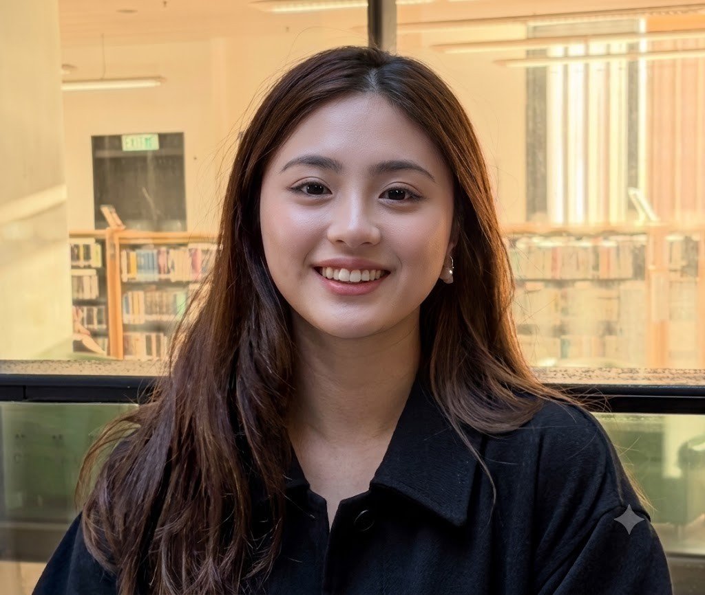

The Realization
Never fully belonged to one box growing up. Turned out that's useful. It gave me a different set of glasses for how the world actually works.
I'm an introvert who somehow keeps landing in roles built entirely around people, systems, and the gap between them. Here's how that happened.
Growing up in a mixed-culture household, I got used to being the translator before I knew that was a skill. Multiple languages, different beliefs, different habits under one roof. You learn fast that as long as someone's willing to communicate, you can move almost anything.

I didn't set out looking for roles that put me in the middle of things. I actually wanted the opposite: something quiet, technical, low on people. But every project I landed on had the same shape: a system on one side, the people who had to use it on the other, and a gap in between that nobody had assigned to anyone.
So I filled it. Not because it was in my job description, but because I already knew how. I'd been doing it at the dinner table my whole life.
I Don't Just Coordinate Projects. I Build The Understanding That Makes Them Actually Work.
Never fully belonged to one box growing up. Turned out that's useful. It gave me a different set of glasses for how the world actually works.
Structure gets a project started. Understanding is what actually finishes it. I stopped coordinating and started translating.
Technology moves faster than most organisations can make sense of it. Someone has to sit in that gap and turn "we're not sure yet" into a plan people can act on.
The journey is still unfolding, but the direction is clear: I want to keep building the bridge between people and technology.
I'm always up for a coffee chat about bridging people and technology, building programs, or figuring out the messy middle of a project.